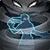

圣盾术
3.5 分钟 · 持续 8 秒
免疫一切伤害，清掉多数有害效果（腐化清不掉）。必留给加瓦兹特光束和化身腐化；其余地方只在距下个必留点不少于 3.5 分钟时顺手交。
这本的压力集中在三处：毒蛇道三叶虫的流血冲锋、加瓦兹特的尖塔光束、化身战的腐化。圣佑约一分钟转好就交；圣盾 3.5 分钟，必留给光束和腐化，中间隔够冷却才顺手用；保护祝福给自己清三叶虫流血；化身战在化身能吃治疗时把圣疗术交给它。
四张手牌管住全本，外加一条自律规则和三个必断读条。
免疫一切伤害，清掉多数有害效果（腐化清不掉）。必留给加瓦兹特光束和化身腐化；其余地方只在距下个必留点不少于 3.5 分钟时顺手交。
减伤三成并附带复仇之盾。全本主力减伤，转好就交给下一个全团读条或身上的持续伤害。
免疫物理并清掉流血。主要给自己清三叶虫的锯齿冲锋；暗影、自然伤害挡不住。
替队友分担三成伤害；点了正义保护还会清掉并挡住对方的中毒。开着圣盾时转来的伤害全免，正好转好就趁圣盾给出去。
一场 +23 限时实录（展示真实冷却节奏，非每波强制照搬；具体取舍见下方路线）。
看到什么 → 按什么 → 为什么。带「必做」标签的高亮行是每把必做的关键动作。

取自 +23 限时录像的惩戒天赋，英雄天赋烈日先驱。复制字符串，在游戏天赋界面点「导入」。
CYEAAAAAAAAAAAAAAAAAAAAAAAAAAAwoZbbmZWGzYGAAAAAAzUmlZYmx2Y2GmZbGjxYYGLsBgZZ2mZmtGAAAYBwAgxMbAzYmZDYmZYMjBD
这几个防御/功能天赋不要动
常见可换：圣光的正义换迅捷审判，或正义保护、正义牺牲换圣洁之地、带头冲锋（换后牺牲祝福变回 2 分钟且不再清毒）。